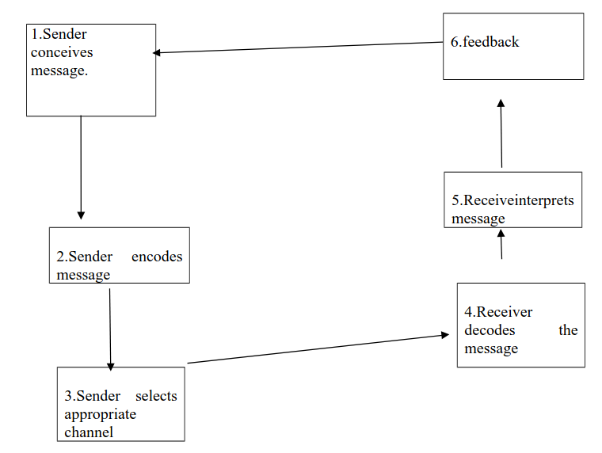
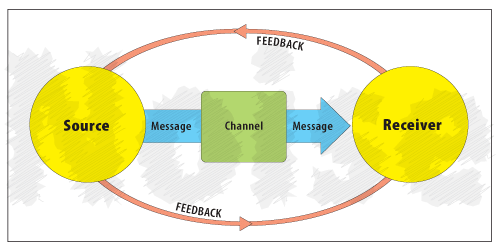

Module 1: Introduction to Business Communication
üéØ Learning Objectives
- Define the concept of communication.
- Discuss characteristics of communication.
- List and describe elements of business communication.
- Illustrate the communication process and explain the importance and relationship of each component.
- Define organizational communication.
- Describe the direction of organizational business communication.
üìö Lesson One: An Overview to Business Communication
Communication is the thread that holds people together in their everyday lives, whether in social or business interaction. Communication binds together the actions of individuals or organizations to desired objectives. Lack of effective communication will most likely result in some kind of problems for individuals or organizations.
This lesson looks at communication as a process that enables people to share ideas, opinions, or suggestions. The lesson focuses on communication in general with emphasis on: characteristics of communication, elements in communication, and the process of communication.
Defining Communication
Communication can be defined as the transmission of information and understanding from one person or group to another. The goal is to share the information in a way that the two parties involved understand each other effectively.
Characteristics of Communication
People exchange ideas, feelings, thoughts, and statements every day. We can make highly important and descriptive statements about communication. Each of the statements we make expresses how complex communication is.
Communication is Omnipresent
Whatever form of our everyday behavior and activities, we remain very much a part of the communication process. Everywhere we turn, some kind of meaning is created within us, while at the same time creating a meaning in others. We read and talk; listen and react; we stare and remain mum. Communication is as obvious in our lives as breathing and eating. It follows, therefore, that communication is a human imperative – something you must do. People will find meaning in everything you do.
Communication is Complex
Not every form of communication is as simple as it might seem to be on the surface. Communication involves many parts or pieces. Because we communicate so often, we hardly stop to think about how complex creating meaning can be.
Communication is Multi-level
There are several levels at which communication takes place. Sometimes, we create shared meaning within ourselves, or within others. We can communicate in a small group or in a very large group. These aspects of communication constitute four major levels:
- Intrapersonal communication
- Interpersonal communication
- Person-to-group communication
- Mass communication
Intrapersonal Communication
The meaning we create within ourselves is called intrapersonal communication. Quite often we make imaginations and even create situations to the extent of talking to ourselves. Sometimes we talk to ourselves aloud or in silence. Before we share a meaning with others, we create within ourselves the meaning we want to transfer with our message. Intrapersonal communication also takes place when we analyze a message we have received. Before you reply to a letter, for example, you think first.
Interpersonal Communication
This type of communication is between two or more people who actively participate in exchanging messages. Examples include a conversation between two people or a group participating in an interview. The level of effectiveness of communication varies; the smaller the group, the more effective the communication and vice-versa. The size of a group that allows interpersonal communication among all members is about 10-14 people.
Person-to-group Communication
Also called public speaking, this level of communication involves one person. In this, the person speaking is referred to as the speaker while the other persons are called the audience. The audience are addressed as a group rather than as individuals. The speaker sends a message to the receiver where the group receives the message as one receiver. Examples include church sermons, class lectures, report presentations, political rallies, etc. The group, who are at the same location, may be of infinite number.
Mass Communication
This form of communication, also called mass media, uses technology to communicate the same message to very large groups of people. The message involves the use of both print and electronic media. Print media include newspapers, magazines, posters, billboards, and other printed material, which enable thousands and millions of people to receive the same message. Electronic media allows message at the same time. Examples include radio, television, and internet, which allows people to interact with the developer of the message.
Elements in Communication
In all communications, at least some of the elements shown below must exist. All business communications must:
- Originate from somewhere
- Be transmitted
- Have somebody at the other end to receive and understand the message
The main features of communication are as shown below:
- Motivation
- The aim
- Information
- The sender
- The message
- Encoding
- The medium
- The channel
- The receiver
- Noise
- Feedback
Each of these elements is significant as described below:
Motivation: This is the primary urge — the essence of communication. Motivation explains why communication takes place, e.g., the urge to meet the organization's objectives, the desire to do a job properly for pay, or the urge to tell someone your feelings towards them.
Aim: This is the more specific reason for communicating. There are four basic aims for communication:
- Informing: The intention in this type of communication is simply to tell someone about something, e.g., a 'no smoking' notice, a letter giving news of recent events.
- Influencing/persuading: The idea in this type of communication is to change someone else's opinion or attitude towards something, e.g., advertising, appeal against irresponsible sex to avoid HIV/AIDS.
- Initiating action: This kind of communication is aimed to get the reader to do something, e.g., requesting for expense claims to be submitted to the accounts department, getting class assignments to be submitted to the lecturer by a particular date and time.
- Entertaining: This type of communication is meant to get someone else entertained.
NB: All the four aims can sometimes be present within the same item of communication.
Information: This is the actual content of the message to be transmitted to someone else (the listener). Information need not be factual; it could be an idea, opinion, or a combination of facts and opinion.
The sender: This person originates and transmits the message to someone else. The sender can be an individual, a group of people, or an organization.
The message: This is the best and simplest form of idea, opinion, or fact transmitted to someone else. The transformation of information into its simplest understandable form is called encoding. When the information is encoded, it becomes the message. The message can be sent through different forms including: a letter, memo, telephone call, a smile, a shrug of the shoulders, and some other gestures.
The medium: This is a large group of ways of communicating. There are three major media:
- Written communication: This media involves the use of letters, memos, books, articles, and any such written material.
- Oral communication: This type of communication involves any method using spoken words such as meetings, telephone calls, interviews, lectures, and informal discussions.
- Visual communication: This type of media involves the use of the eye, such as drawing, photographs, or other ways of putting over a message by pictorial means.
The channel: This is the physical means by which the message is conveyed:
- For written communication, channels may be notice boards, memos, public postal services, etc.
- For oral communication, channels may be personal interviews, committee meetings, departmental briefings, and class lectures.
- For visual communication, channels may be computer printouts, video slides, concerts, drawings, and other graphical expressions.
The receiver: This is the individual person or body that receives the message. This can be an individual person, organization, department, political party, or government ministry.
Noise: Any factors which prevent effective communication from taking place can be noise. Noise can be physical, such as sounds of traffic, typewriters, or telephone bells, which interrupt a meeting. Other forms may be bad telephone connection, poor handwriting in letters, or conflicting messages through facial expressions or gestures that are not tallying with the sender's oral message.
Feedback: This is information which the sender receives back from the receiver confirming that the message was received in the same way in which the sender had meant. Feedback is a verifiable reaction of the receiver.
Feedback can be given through the receiver's facial expression; the sender asking the receiver to repeat the message; or the receiver interrupting the communication process to seek clarification from the sender.
Communication Process
There are six basic steps in communication, which involve both the sender and receiver. These steps include:
- Conceptualizing
- Encoding information
- Information transfer (choosing appropriate channels)
- Receiving information and decoding it
- Interpreting information (tone, wording, etc)
- Feedback
Both the sender and receiver play specific roles at the various stages of the communication process. In a typical, two-way communication process, the sender and the receiver play both roles alternately. The first three steps of the process involve the sender, while the last three steps involve the receiver.
The Sender
The first three steps of the communication process are the responsibility of the sender.
Step 1. Conceptualizing: This first stage of communication is in the form of an idea. The idea may be an opinion, an observation, or anything else for which the sender feels an urge. At this stage, the sender has the motivation, which forms the basis for communication. The sender defines the information to be sent and determines the aim of communication and the content to be conveyed.
Step 2. Encoding information: The sender puts together information into the best and most suitable terms, which can be understood easily by the receiver. Encoding often involves putting an idea into words, putting an idea into a picture, or composing a song.
Step 3. Information transfer: This step comprises three components: the message, medium, and channel — all of which exist for the actual transfer of information. All aspects are considered in determining cost, speed, printed record, and confidentiality.
The Receiver
Like the sender, the receiver plays a significant role in the communication process. The next four steps involve the receiver.
Step 4. Receiving and Decoding Information: This stage comprises two components:
(a) Receiving information: At this stage, the receiver may take in the message by any method such as reading a letter, listening to a speech, watching a picture, or looking at an educational video. What the receiver gets from the sender does not make any meaning until the receiver decodes the message.
(b) Decoding information: At this stage, the receiver interprets the message he or she has received. The receiver forms his or her own idea of the information conveyed to him or her.
Step 5. Interpreting the message: This stage involves understanding the correct meaning of the message on the part of the receiver. For example, is the message conveying a warning, commendation, or advice, based on the perceived tone of the sender? A message may be distorted if the receiver does not give it the correct meaning that the sender intended to convey.
Step 6. Feedback: This stage involves scanning the communication to ensure understanding and agreement between the sender and the receiver. For example, nodding and smiling may be a positive signal that both the sender and receiver are communicating effectively.
Noise: Noise, in the communication context, is anything that prevents a message from being received effectively. In the communication process, noise may exist in either physical or psychological forms. Physical noise could be a phone line with static, a motor vehicle roaring outside a classroom, or handwriting that is hard to read.
Psychological noise could include dislike against a speaker, being concerned about anything else other than the message, or already having one's mind made up about an issue. Noise is a significant element in all communications as it is most likely to exist at all stages of the communication process, though at varied levels.
üìù Summary of Overview of Business Communication
- Communication involves transmitting information and understanding.
- Key elements include sender, receiver, message, medium, and feedback.
- Effective communication requires agreement on meaning and intent.
- Noise (physical or psychological) can disrupt communication.
üìö Lesson Two: Organizational Communication
In the previous chapter, we examined the nature of communication in general. We also identified essential elements in communication, and the roles the sender and the receiver play in the communication process. The remaining chapters of this book will discuss communications as it applies to the business environment. Organizations are entities created for specific purposes. No matter the purpose of an organization, effective communication remains the key to the organization's success. The ability of individuals within an organization to communicate with each other and the entire organization to communicate with the public within its environment is crucial. The ability to communicate effectively in business is crucial to both the individual and the organization. For the individual, effective communication skills are necessary for getting the job initially, accomplishing assigned tasks, and advancing to higher positions within the organization. For the organization, effective communication results in developing and maintaining goodwill among employees, customers, and business associates while getting the job done efficiently.
This chapter of the book focuses on organizational communication. Specifically, the chapter examines business communication as well as its directions within an organization.
Definition
Organizational communication is a system, a structured network that explains how information flows among the various units of an organization.
A structured business communication network, therefore, enables an organization to reduce time wastage and ensures the messages are channeled to those who will understand the issues involved.
Business communication can be defined as the transmittal or exchange of any information that deals primarily with business. Business communication involves the use of important skills such as reading, writing, speaking, listening, and nonverbal communication. Unlike social communication, business communication is highly structured and observes strict use of grammar. For example, Standard English is the language that is generally applied and accepted by all people who speak English.
Nature of Business Communication
Business communication, also defined as organizational communication, is fundamentally different from social and any other type of communication. Business communication takes place in organizations between employees and supervisors, among employees themselves, among supervisors themselves, and between the organization and external publics within its business environment.
Characteristics of Business Communication
Good business communication always uses standard grammar and has certain features. Good business communication:
- Avoids the use of slang
- Uses complete sentences
- Uses clear language. In speaking, unclear language usually confuses the audience. In writing, unclear language is usually characterized by poor grammar, spelling, and composition.
- Avoids prejudice. Good business communication uses neutral terms, such as chair or chairperson instead of chairman or chairwoman.
- Avoids assumptions and accusations. That is, the communication approaches all problems systematically and diplomatically: For example, a good business communication might say, "Unfortunately we do not have a refund policy" instead of “We refuse to refund your money for the item you yourself have obviously broken."
- Is concise. That is, good business communication is to the point and unwordy.
- Is always polite and considerate. Good business communication always says ''thank you"
- In addition, it tries to be courteous and helpful whenever possible.
To communicate effectively in the world of business, you must have a sound grounding in grammar, punctuation, and spelling. It does not matter your status in an organization, you will need good business communication to discharge your duties and responsibilities effectively and efficiently.
Direction of Business Communication
Organizational business communication takes place in two primary directions:
- Vertical direction
- Horizontal direction
1. Vertical business communication flows from down upwards as well as from top downwards. This type of communication takes place between people of different levels of seniority in the organization. It takes place in two directions:
- Upward, and
- Downwards
Upward business communication: People involved at the of the organization's activities communicate upwards, supervisory or managerial level.
Forms of Upward Communication
There are various forms of upward communication, the most common of which include, informal discussions, suggestion schemes, polls and ballots, and grievances.
Informal discussions/suggestions: This is the most frequent form of business communication. It involves workers talking to supervisors about various events, e.g. machine breakdowns, ideas for new approaches, or any other matter arising during working activity.
Suggestion schemes: Workers may suggest improvement in work processes by these formal schemes. Special forms may be involved; and employees may be encouraged to participate through incentives.
Polls and ballots: Polls and ballots are forms of business communication, which help in determining the feelings of employees about issues of a policy or procedure. These forms of communication allow employees to vote for or against a proposal. Where employees are to be consulted, through this method of communication, a meeting would usually be organized or a questionnaire prepared to canvass opinions.
Grievance procedures: This form of upward organizational communication allows employees who feel they have been unfairly treated to appeal against the decision. Employees can appeal against issues such as:
- failure to gain promotion
- unfair disciplinary action
- unfair transfer
- unfair work assignment
- unfair rewards, etc
The employee may make known his grievance by:
- completing a form
- arranging an interview with the supervisor
- Contacting a trade union representative, among others.
Downward Organizational Communication
Organizational communication vertically downwards is the most common one. It involves superiors communicating downwards to their juniors.
Forms of Downward Organizational Communication
Organizations use a variety of channels in downward communication, some of which are listed below:
- Memos
- Newsletters
- Training and induction documents
- Letters
- Notices
- Company handbooks
- Health and safety policy documents
- Joint consultative and other committees
- Full meetings
- Appraisal interviews
- Disciplinary interviews
- Exit interviews
The most appropriate form of business communication must be selected carefully for accurate, clear and cost effective message. Below is a brief description of each of the channels: Memo: This is a formal written communication sent between members of the same organization. Managers may use memos to convey messages about assignments, reprimands, commendations, among other things.
Training and induction documents: These types of documents may convey information about training programmers such as type of training, duration of training, and training provider, among other things. Information on training usually flows from managers to existing employees of the organization. Induction documents carry information for new employees about the organization. They also spell out what the organization expects of the new employees in terms of their conduct and performance.
Letters: Like memos; letters are formal forms of written communication. Organizations use letters mainly for communication to external audience. Internally, letters can be used to convey messages of personalized nature.
Notices: Notices are brief written communication to employees. Through notices, managers may inform employees about impending or transpired events within the organization such as an office party, performance of a department, and changes within the organization.
Company handbooks: This is a company booklet, which is also called policy manual. The booklet contains guidelines on employment relationship between employees and company. It also spells out, among other things, what the company expects of the employees in terms of their conduct.
Health and safety policy documents: These are formal written guidelines about health and safety issues at work place. For example, managers may direct employees about what to do in order to maintain a healthy and safe work environment.
Joint consultative meetings: These are forms of oral communication between managers and representatives of employees. Managers convene such meetings on a regular basis to discuss progress and any challenges at various levels of an organization.
Full meetings: Like consultative meetings, full meetings are forms of oral communication in which employees receive information from their managers about impending or transpired events within an organization. Such communications may take place at various levels of an organization.
Appraisal interviews: These are a form of oral communication between a manager and an employee. In this type of communication, the manager discusses the employee's performance and the two jointly set new targets for the employee to achieve within a specified period.
Disciplinary interview: This is a fact finding oral communication, which takes place between a manager and an employee with a disciplinary case. The interview enables the manager to obtain information and decide on disciplinary action to take against the employee.
Exit interview: This is an oral form of communication between a manger and an employee upon termination of employment relationship. Such an interview allows the manager an opportunity to seek the exiting employee's opinion about various aspects of the organization. Information obtained from the exiting employee through such an interview may be used to strengthen relevant areas of the organization's human resource policy.
2. Horizontal Business Communication: This form of business communication occurs between people of the same status in an organization. Horizontal communication can be informal or formal communication.
Formal communication takes place in a structured setting such as that which heads, supervisors, directors and others whose work is similar but takes place within different sections of the organization.
Informal horizontal communication takes place among employees of the same status, but may include those in other status within the organization. A typical example of this form of communication is grapevine. Grapevine is an informal communication system which is constantly changing. The grapevine is a vehicle for distortions of truth, rumor and gossip. This type of communication usually spreads to all directions of an organization.
Grapevine may have a major advantage of bringing employees closer to one another to talk about matters to improve working atmosphere. Its major disadvantage is that it may become network of rumor and gossip —being a destructive force in the company. Negative effects of grapevine be reduced by promptly informing employees of important news.
üìù Summary of Organizational Communication
- Organizational communication is a structured network for information flow.
- Communication flows vertically (upward and downward) and horizontally.
- Upward communication includes feedback, reports, and suggestions.
- Downward communication includes instructions, policies, and announcements.
- Horizontal communication occurs between peers.
- Grapevine is informal horizontal communication.